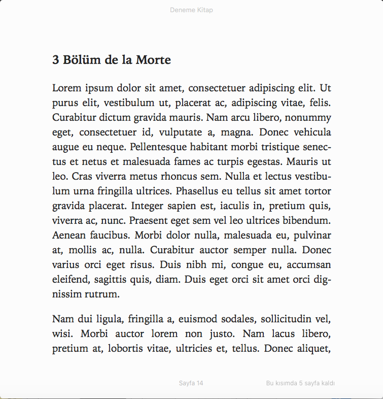

E-Kitaplar ve Bir EPUB Dosyasının Anatomisi
Kayıt Tarihi:
Son Güncelleme:
Bu yazımda size EPUB formatında bir e-kitap dosyasının içeriğinden bahsedeceğim. Bu yazıda öğrendiklerinizle bir örnek yapacaksınız ve ilk e-kitabınızı EPUB formatında hazırlayabileceksiniz. DRM (Digital Rights Management) konusundan bahsetmeyeceğim.
Anahtar Kelimeler: e-kitap · EPUB · HTML · META-INF · mimtype · ncx · opf · XML
EPUB formatındaki bir e-kitap dosyası aslında kitabın içeriğini oluşturan HTML dosyaları ve ilave bir kaç özel dosyanın sıkıştırılarak oluşturduğu bir zip dosyasıdır; inanmazsanız bir EPUB e-kitabının .epub olan uzantısını .zip olarak değiştirdikten sonra kullandığınız sıkıştırma uygulaması ile (WinRar gibi) içeriğine bakın.
Hemen şimdi basit bir e-kitap oluşturalım, tarif edeceğim basit adımları uygulayın. Öncelikle kitabımız üç bölümden oluşsun ve her bir bölüm ayrı bir HTML dosyasında yazılmış olsun, ben bölümleri önceden bolum1.html, bolum2.html ve bolum3.html olarak ve ayrıca bir de kapak.html dosyası hazırladım (dosya isimlerinin üzerlerine tıklayarak görüntüleyebilir ve indirebilirsiniz).
Şimdi aşağıdaki satırları bir metin editöründe yapıştırıp icindekiler.ncx ismiyle .ncx uzantılı bir dosya olarak kaydedin.
<?xml version="1.0" encoding="utf-8"?>
<!DOCTYPE ncx PUBLIC "-//NISO//DTD ncx 2005-1//EN" "http://www.daisy.org/z3986/2005/ncx-2005-1.dtd">
<ncx xmlns="http://www.daisy.org/z3986/2005/ncx/" version="2005-1">
<head>
<meta name="dtb:uid" content="http://sogrekci.com/deneme-kitap" />
<meta name="dtb:depth" content="3" />
<meta name="dtb:totalPageCount" content="0" />
<meta name="dtb:maxPageNumber" content="0" />
</head>
<docTitle>
<text>Deneme Kitap</text>
</docTitle>
<navMap>
<navPoint id="navPoint-1" playOrder="1">
<navLabel>
<text>1 Hayali Bölüm</text>
</navLabel>
<content src="bolum1.html#x1" />
</navPoint>
<navPoint id="navPoint-2" playOrder="2">
<navLabel>
<text>2 Hayalet Bölüm</text>
</navLabel>
<content src="bolum2.html#x2" />
</navPoint>
<navPoint id="navPoint-3" playOrder="3">
<navLabel>
<text>3 Bölüm de la Morte</text>
</navLabel>
<content src="bolum3.html#x3" />
</navPoint>
</navMap>
</ncx>
Şimdi XML içerikli başka bir dosya daha oluşturacağız, aşağıdaki satırları yapıştırıp kitap.opf adıyla .opf uzantılı olarak kaydedin; bu dosya e-kitabınızı oluşturan dosyaların listesini ve kitabınızın isim, yazar gibi bilgilerini içeren standart bir dosyadır.
<?xml version="1.0" encoding="utf-8"?>
<package xmlns="http://www.idpf.org/2007/opf" unique-identifier="dcidid" version="2.0">
<metadata xmlns:dc="http://purl.org/dc/elements/1.1/" xmlns:opf="http://www.idpf.org/2007/opf">
<dc:title>Deneme Kitap</dc:title>
<dc:language>en-US</dc:language>
<dc:identifier id="dcidid" opf:scheme="URI"> http://sogrekci.com/deneme-kitap</dc:identifier>
<dc:creator>Süleyman ÖĞREKÇİ</dc:creator>
<dc:date>2020-11-22T17:25:00Z</dc:date>
</metadata>
<manifest>
<item id="ncx" href="icindekiler.ncx" media-type="application/x-dtbncx+xml" />
<item id="stylesheet" href="blnd.css" media-type="text/css" />
<item id="file1" href="kapak.html" media-type="application/xhtml+xml" />
<item id="file2" href="bolum1.html" media-type="application/xhtml+xml" />
<item id="file3" href="bolum2.html" media-type="application/xhtml+xml" />
<item id="file4" href="bolum3.html" media-type="application/xhtml+xml" />
</manifest>
<spine toc="ncx">
<itemref idref="file1" />
<itemref idref="file2" />
<itemref idref="file3" />
<itemref idref="file4" />
</spine>
</package>
Buraya kadır hazırladığımız tüm dosyaları (HTML dosyaları da dahil) bolumler adında bir klasör içine yerleştirelim. Daha sonra bir de META-INF isimli bir klasör içinde container.xml adında içeriği aşağıdaki gibi olan bir dosya oluşturalım. Bu dosyanın içinde daha önce oluşturduğumuz OPF dosyasının yeri belirtiliyor.
<?xml version="1.0"?>
<container version="1.0" xmlns="urn:oasis:names:tc:opendocument:xmlns:container">
<rootfiles>
<rootfile full-path="bolumler/kitap.opf" media-type="application/oebps-package+xml"/>
</rootfiles>
</container>
Son olarak yukarıdaki resimde de görüldüğü gibi mimetype isimli ve uzantısız bir dosya oluşturacağız, bunun tek satırlık içeriği aşağıdaki gibi olacak.
application/epub+zip
Şimdi artık yukarıda oluşturduğumuz bolumler ile META-INF klasörlerini ve mimetype dosyasını sıkıştırıp ekitap.zip dosyasını oluşturun, sonra da bunun uzantısını değiştirerek ekitap.epub dosyasını elde edin (dosya adına tıklayarak benim elde ettiğimi indirebilirsiniz).

Raspberry Pi ile Fiziksel Hesaplama
Jupyter Notebook İle Uzak Sunucuda Program Geliştirme